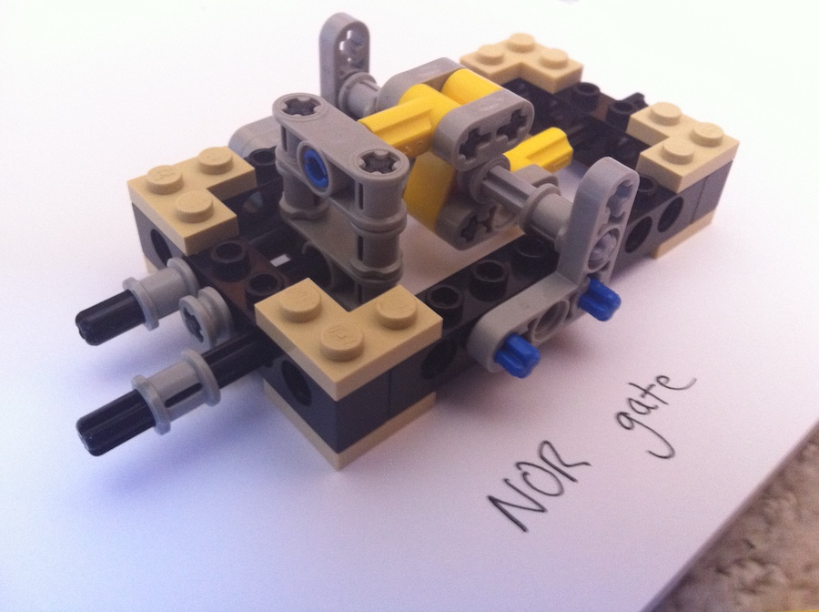
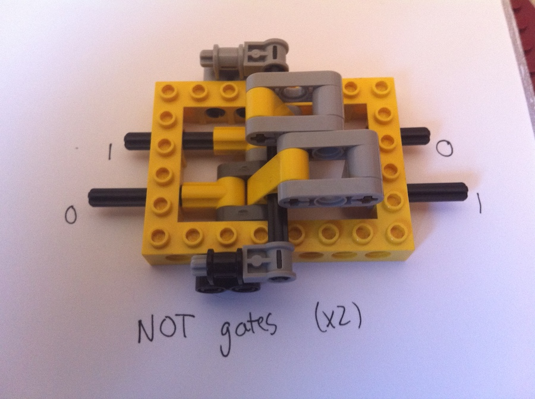
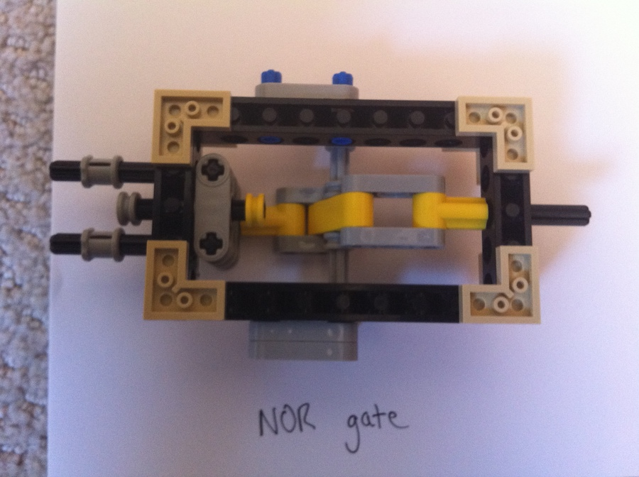
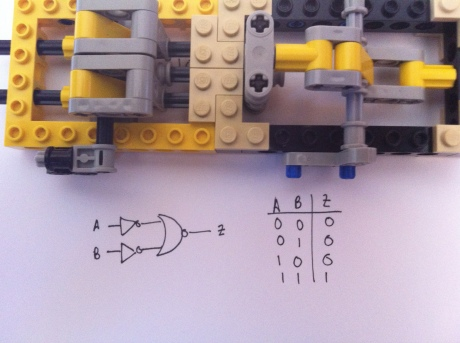
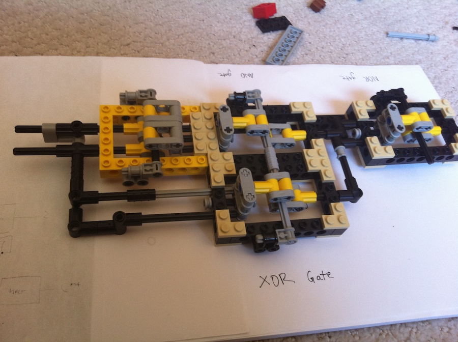
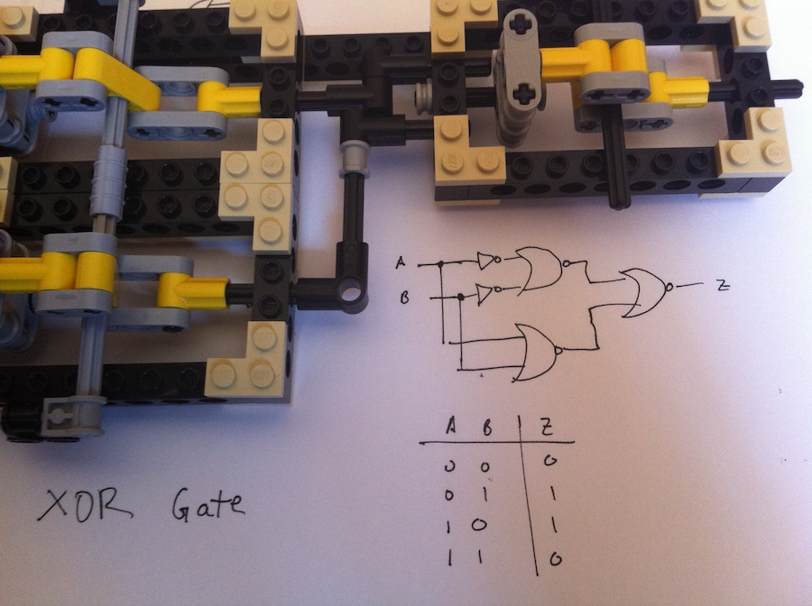

Logic Gates
Digital computers rely on transistor logic to function – that is, that all computation in a computer is done by large combinations of on-and-off switches, wired together in meaningful ways. Transistors are used to create “logic gates”, which are the fundamental building blocks of everything in a computer. This isn’t limited to just desktop computers – phones, iPods, and even those cheap electronic pocket games from McDonald’s happy meals, are all based on transistor logic. In conventional digital circuits, the basic gates take inputs in the form of an electrical current running through a wire (represented by a ’1′ in Boolean logic), or the lack of one (represented as ’0′), and produce an output based on the input. Put simply, a logic gate is like a yes/no question – two wires are connected to a logic gate, carrying either a high or low current, and the logic gate outputs a high or low current onto a third wire based on the combination of currents in the two wires.

For example, an AND gate outputs a 1 only if both its inputs are 1, and 0 otherwise. The OR gate outputs a 1 if either of its input wires carries a current, the XOR outputs a 1 if only 1 of its inputs is 1, and so on. In computers, these gates are combined to form bigger logic functions – addition, subtraction, and any other mathematical operation can be performed using logic gates. In the combination of gates, the output of two separate gates will be the input of another, which combines with other combinations of gates to be inputs to other gates, and so on.
For my Lego logic gates, current traveling through a wire is replaced by a horizontally-moving axle. The axle pushed forward represents a logic ’1′, while the axle backwards represents a logic ’0′. The position of the axles determines the position of a third axle moving out of the gate, which is then used as input to further gates. For the rest of this post, a ’1′ represents an inward moving axle, and a ’0′ for the converse.
The NOT gate
I decided I’d start with the easiest gate – the NOT gate. This was made by having the axle push a lever around a central axis at one of its ends, and connect the other end to the output axle.

To maximize space, I stuffed two NOT gates into one enclosure. It was tricky trying to minimize the amount of room the lever took, but after playing around with several designs, I finally settled on the one above.
The NOR gate
Since all of the basic logic gates can be built out of combination of NOR gates, I decided I would take on this one next. It turned out to be surprisingly easy – just a wider modification of the NOT gate.

One of the most troublesome aspects of building these gates was making sure that the amount of axle motion is uniform- that is, an axle moving a certain distance into the gate should move the output axle by the same distance.
The AND gate
The AND gate can be built by inverting the inputs to a NOR gate. It was made by simply combining the 2 NOT gates and the NOR gate above.

The XOR gate
An XOR gate is crucial for building ALU’s (arithmetic logic units), especially ones that can add and subtract. The XOR had to be built by first converting an XOR gate to NOR logic, then building the individual components and hooking them together. This ended up as an addition of two gates to the AND gate.

The XOR gate above uses 3 NOR gates and 2 NOT’s. Here’s a more detailed circuit diagram.

Combining the gates
As demonstrated by the XOR gate above, more complex logic is relatively easy to build out of less complex building blocks. I’m currently working on combining the gates into a full adder, which can be combined to form an ALU (arithmetic logic unit). If I’m still feeling adventurous after that, I may try building all the other elements of a computer as well – decoders, switches, flip-flops, and the rest of the digital circuit family. And if I manage to find some serious motivation (and some elves to help me assemble Lego logic gates), I may someday write a post about the world’s first Lego computer.
Mentions
Let me know if you mention this project and I'll put a link to your site here.
- BrickExchange - top answer :)
- Sebastian Wahl - built some gates with modification, very cool stuff.
- FAQ Overflow - excellent synopsis.
- mindbleach.com - has a table of all the lego logic projects on the Internet, and very interesting solution. Would be so cool to see a dedicated Lego piece for logic.